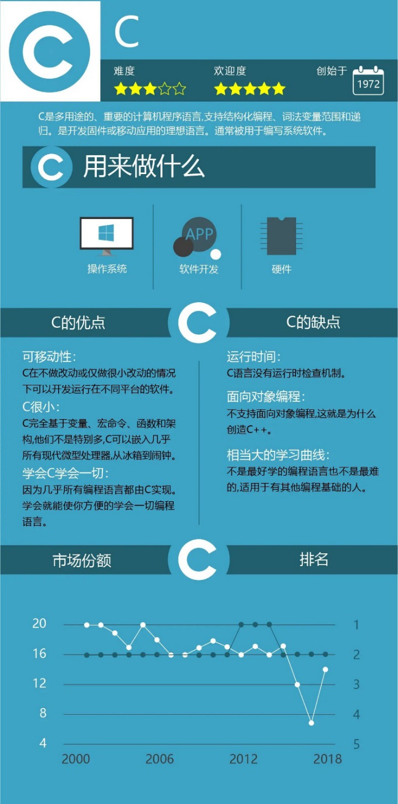

编程语言发展历史
Evolution

Some popular kinds
(1)C language
Benefits of C language
- Simple, compact, flexible and convenient
- Operator rich
- The data structure is rich
- C is a structured language
- C grammar restrictions are not strict, program design freedom is large
- The C language allows direct access to physical addresses and direct hardware operations
- C language program generated code quality, program execution efficiency
- C language has a wide range of applications and good portability
- C language has a prominent advantage is suitable for a variety of operating systems, such as DOS, UNIX, but also for a variety of models
- Effectively break down a more complex program system design task into many easy-to-control and process subtasks for easy development and maintenance
Disadvantages of C language
- C language disadvantages are mainly reflected in the encapsulation of data, which makes C in the security of data do a great defect, which is also a big difference between C and C++.
- C the syntax restrictions of the language are not strict, the type constraints on variables are not strict, affect the security of the program, the array subscript cross-border does not check. From an application perspective, the C language is harder to master than other advanced languages.
- Poor reusability
- Poor data security
- It is difficult to develop large-scale software and graphical interface applications
- Separate data from the process of processing data into separate entities
- When the data structure changes, all related processes should be modified accordingly
- Each new approach to the old problem has an additional overhead
- Graphical user interface applications, difficult to describe and implement with the process, development and maintenance are also difficul
(2)Java
Benefits of Java
- Simplicity
- Object-oriented (object-oriented to 95%)
- Robustness
- High performance (automatic garbage collection mechanism)
- Multithreaded
- Dynamics
- Security
Disadvantages of Java
- Inefficient (no doubt)
- Cross-platform is its biggest advantage and biggest disadvantage
- Complexity (doing a project requires a lot of knowledge and covers a wide range of areas)
(3)C#
Features of C language
- Fully object-oriented.
- Support for distributed applications is based on Microsoft's belief that distributed applications are the future trend, where processes are distributed across clients and servers. So the birth of C is destined to solve the distributed problem very well.
- Similar to Java, the code is compiled to become an IL (intermediate language). At runtime, the IL is then compiled into platform-specific code.
- Robust, C# is no less than Java in checking for program errors and compile and runtime errors, and C# also uses an automatic management memory mechanism.
- C is not as completely abandoned as Java is with pointers and manual memory management. Pointers are not available by default, and programmers can turn them on when necessary. This guarantees programming flexibility.
- Security: Security is provided by the .net platform. The code compiles and becomes the IL language. is a controlled code, .net provides a type security check and other mechanisms to ensure that the code is secure.
- Portability: Because C# uses an intermediate language mechanism similar to Java. This makes C# similar to Java and can be easily ported to other systems. At run time, the intermediate code is then compiled into code that is appropriate for a particular machine
- Explanatory: C# is also a special explanatory language.
- High performance: When the code is compiled into an intermediate language, it can execute the program efficiently.
- Multithreaded: Similar to Java, multiple threads that perform small tasks can be divided by a single main process.
- Component mode: C# is well suited for component development. Individual components can be implemented in other languages and then integrated in .net.
It's a new language that was born after Java became popular. Because Microsoft has a big advantage in operating systems. In the past development accumulated a lot of experience, the formation of the .net platform, so C in Windows can be said to have a greater advantage than Java. Technically alone, C# can compete with Java in network programming. There are also some advantages to Windows Forms.
(4)C++
Benefits of C++ language
- Strong scalability
- Efficient, concise and fast
- Portability
- Object-oriented properties
- Strong and flexible expression ability and not lose the effect of C
- Support hardware development
- he relationship between program modules is simpler, and the independence of program modules and the security of data are well guaranteed
- Through inheritance and polymorphism, the reusability of the program can be greatly improved, making the development and maintenance of software more convenient
Disadvantages of C++ language
- Compare the bottom, ease of use is not very
- Multiple inheritance and friend mechanism
- The standard library is not covered enough
- The development cycle is long
- Non-parallel
- It's difficult to master
- The granularity package is not enough